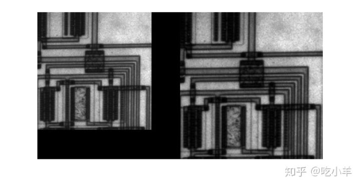
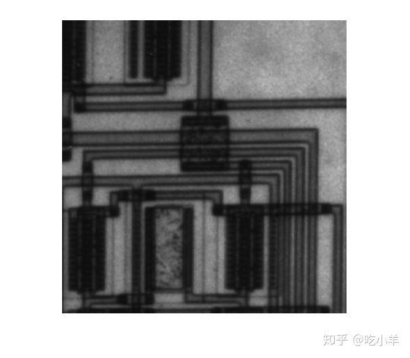
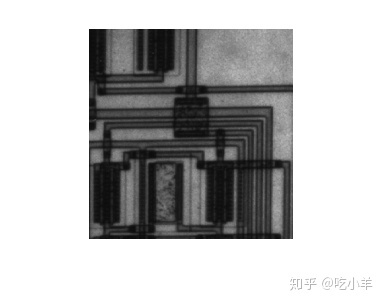

Home
本示例说明如何使用imresize函数调整图像大小。
指定放大倍数
将图像读入工作区。
I = imread('circuit.tif');
使用imresize功能调整图像尺寸。在此示例中，您指定放大倍数。要放大图像，请指定大于1的放大倍数。
J = imresize(I,1.25);
在放大的版本旁边显示原始图像。
figure imshowpair(I,J,'montage') axis off

指定输出图像的尺寸
再次调整图像大小，这次指定输出图像的所需大小，而不是放大值。传递给imresize函数一个包含输出图像中的行数和列数的向量。如果指定的尺寸不能产生与输入图像相同的纵横比，则输出图像将失真。如果将向量中的元素之一指定为NaN，imresize则将计算该尺寸的值以保留图像的纵横比。要执行多分辨率处理所需的调整大小操作，请使用impyramid。
K = imresize(I,[100 150]); figure, imshow(K)

指定插值方法
再次调整图像大小，这次指定插值方法。放大图像时，输出图像比原始图像包含更多的像素。imresize使用插值法确定这些像素的值，计算像素位置附近某组像素的加权平均值。imresize权重基于每个像素距该点的距离。默认情况下，imresize使用双三次插值，但是您可以指定其他插值方法或插值内核。有关imresize完整列表，请参见参考页。您还可以指定自己的自定义插值内核。本示例使用双线性插值。
L = imresize(I,1.5,'bilinear'); figure, imshow(L)

缩小图像时防止混叠
再次调整图像大小，这次缩小图像。减小图像尺寸时，会丢失一些原始像素，因为输出图像中的像素较少。这可能会引入缺陷，例如混叠。由于尺寸减小而发生的混叠通常显示为阶梯图案（特别是在高对比度图像中），或者在输出图像中显示为莫尔（波纹效果）图案。默认情况下，imresize对于所有插值类型（最近邻除外），都使用抗混叠来限制锯齿对输出图像的影响。要关闭抗混叠功能，请指定“抗混叠”参数并将其值设置为false。即使启用了抗混叠功能，调整大小也会引入伪影，因为当您减小图像尺寸时，信息总是会丢失。
M = imresize(I,.75,'Antialiasing',false); figure, imshow(M)

======================================================================
我的测试结果及程序
下面是我测试的代码：

注：本文根据MATLAB官网内容修改而成。